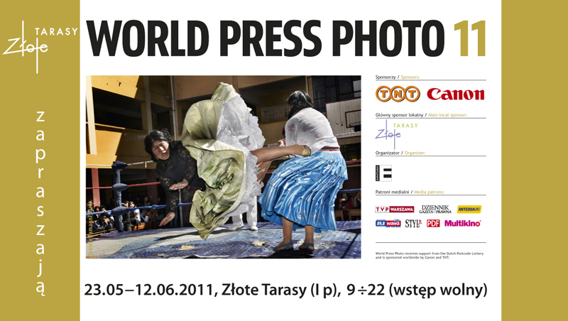

Calendar and news:
June
World Press Photo
This photographic organization aims to support professional press photography on a wide international scale. Promotional activities include an annual contest, exhibitions, the stimulation of photojournalism through educational programs, and creating greater visibility for press photography through a variety of publications.
Enter to its site and apreciate the winner of last photographic contest by World Press Photo. The exhibition is on display around of world. Now it is Polland,Warsaw, in Złote Tarasy It is going be there until June 12, 2011. If you have opportunity, do not hesitate to attend it.
By the way a mexican: Fernando Brito, of diary El Debate de Culiacán, was the winner of third place in this contest. You can look its photo here.
July
Robert Mapplethorphe in Fotografiska
The eccentric even controversial work, for some critics, of one of the most representative photographers during the 21st. century, it will be exhibited in the photographic museum fotografiska, Stockholm, Sweden.
The Mapplethorphe's work, characterized by his carefully controlled compositions that emphasize the formal beauty of the image, will be exhibited from June 17 to October 2, 2011.
More about Mapplethorphe.
August
International day of Photography
The photography was first announced on 19 August 1839, therefore this date has been designated as the International Day of Photography.
Photography is one of the most important inventions of mankind, without it the world would be in the dark, many records do not exist and many discoveries remain hidden from our eyes. We are not impossible to imagine a newspaper or the Internet without images that represent what is written, this invention has become indispensable in our lives.
The International Photographic Society of India began to celebrate the World Day of photography in 1991 and has since encouraged other countries to do likewise.
September
Photoseptember and Light's Festival Mexico 2011
Beginning in 2000, is headquartered in Mexico Fotoseptiembre as part of Festival of Light, a project that integrates the major photography festivals in the world (www.festivaloflight.net). Also from 2007 is part of Encounters Network and Latin American Photography Festival (REFL).
Here, more information about it.